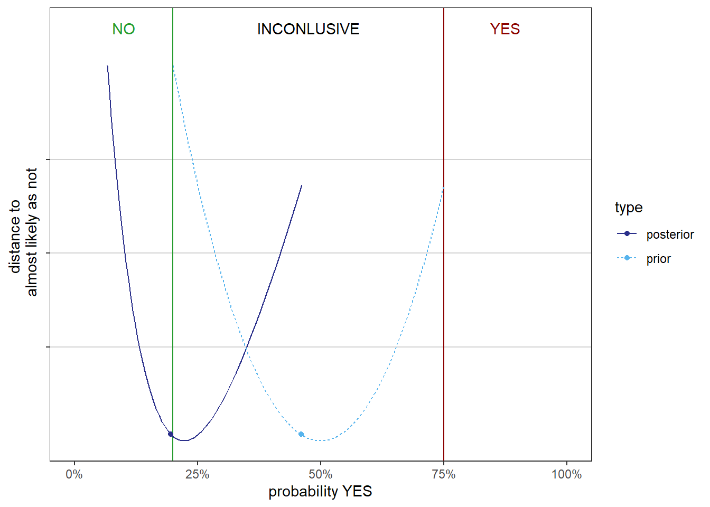

Tiered approaches to characterise uncertainty in NGRA exemplified with an hazard identification
Work in progress RiskHunt3R
Introduction
Tiered approach to reduce uncertainty
If practical certainty is not obtained, collect more data
Follow integrated testing strategies such as the ASPIS framework
Tiered approach to refine uncertainty
If practical certainty is not obtained, and it is not justified to collect more data, refine the characterisation of uncertainty
Follow options for increased refinement until practical certainty is obtained or stop with an inconclusive assessment
Options to refine the procedure:
Use worst case assumptions and characterise uncertainty in conclusion directly by expert judgement
Break down the assessment into parts, characterise uncertainty in each part, combine by calculations, and make expert judgement considering additional sources of uncertainty
Options to refine the precision:
Start with bounded probability (FACTs) or probability bounds (Numbers) and combine by Probability Bounds Analysis (or DST).
Proceed with reducing bounds (FACTs) probabilistic modelling
Settings
Assessment question
For this hazard identification the question is if exposure to compound \(X\) can cause an effect in a chosen endpoint? This is a categorical questions with two possible answers NO and YES.
Uncertainty in the conclusion
The goal of uncertainty characterisation is to summarise uncertainty in the conclusion in a quantitative expression. Here we use (subjective or personal) probability (or degree of belief) as the quantitative expression of uncertainty.
In these examples, we sometimes use % certainty instead of % probability for the more probable outcome. This is also a way to remind ourselves that the probability is should be interpreted as someone’s uncertainty and not a frequency.
Note
There are several reasons to aim for a quantitative expression of uncertainty. Qualitative expressions of uncertainty are still useful. You can read more about it on EFSAs tutorial on uncertainty
Practical certainty
The practical certainty is by risk managers set to be 66% probability for a YES and 80% probability for a NO. The assessment is inconclusive for any uncertainty in between the limits.
| NO | Inconclusive | YES |
|---|---|---|
| <20% | 20 - 66 | >66% |
A tiered approach with uncertainty expressed by precise probability combined with Bayesian reasoning
Step 1.1
Evidence is a QSAR with sensitivity (TPR=80%) and specificity (TNR=70%) with a negative prediction for the endpoint.
Sensitivity (true positive rate) is the probability of a positive test result, conditioned on the individual truly being positive.
Specificity (true negative rate) is the probability of a negative test result, conditioned on the individual truly being negative.
These statistical performance measures can be calculated from data or derived by expert judgement.
We (the assessors) apply Bayesian reasoning with a prior probability of 50% (As likely as not) that the answer is YES to the assessment question.
\[ P(YES|-)=\frac{P(-|YES)P(YES)}{P(-|YES)P(YES)+P(-|NO)P(NO)} = \] \[= \frac{(1-TPR)\cdot 0.5}{(1-TPR)\cdot 0.5 + TNR \cdot 0.5}\]
Thus, given the evidence (and what we know about the accuracy of the QSAR prediction) we are 22% certain that \(X\) is an hazard.
This is the same thing as saying that we are 78% certain that the answer is NO.
Is practical certainty obtained?
No, because the % certainty is not larger than 80%.
We proceed by reducing uncertainty by collecting more information.
Step 1.2
Evidence now consists of two more QSARs with sensitivities and specificities
| TPR | TNR | Prediction |
|---|---|---|
| 80% | 70% | negative |
| 75% | 90% | negative |
| 50% | 70% | positive |
We apply again Bayesian reasoning with a prior probability of 50% that the answer is YES to the assessment question.
\[ P(YES|-,-,+)=\] \[=\frac{P(-,-,+|YES)P(YES)}{P(-,-,+|YES)P(YES)+P(-,-,+|NO)P(NO)}\]
The probability of YES given the evidence is 12%
This is the same thing as saying that we are 88% certain that the answer is NO.
Is practical certainty obtained?
Yes, there is sufficient certainty that \(X\) is not a hazard. Proceed with the decision.
A tiered approach with uncertainty expressed by bounded probability combined with Bayesian reasoning
Step 2.1
Same evidence as above, but start with a prior for a YES bounded in the range of inconclusiveness i.e. between 20 and 66% probability.
Note
The principle is that the experts can put a rough bound on their prior instead of specifying a precise probability. The inconclusive range is here taken as a default option to bound the prior with the purpose to reduce the occasions for formal expert knowledge elicitation.
It is is reasonable that, under certain circumstances, their prior falls within the inconclusive region, otherwise there would have been practical certainty. We have to think more about this
The experts have the opportunity to reduce the range bounded the prior, but it is difficult to justify why they would be allowed to enlarge it. The latter would imply that they specified the wrong bounds from the beginning.
The probability of YES given the evidence is between 7 and 36%.
This is the same thing as saying that we are between 64 to 93% certain that the answer is NO.
Is practical certainty obtained?
No, because (the lower bound of) \(\underline{P}(NO|-,-,+)<80\%\)
The prior probability must be less than 46% instead of less than 66% for the conclusion to reach practical certainty.
A way to illustrate this is to use an unit-less measure for second order uncertainty (or robustness) that maps the prior to the posterior.
Let us proceed by reducing uncertainty by collecting more information.
Step 2.2
Same as above for step 2 with three QSARs.
The probability of YES given the evidence is between 7 and 36%.
Is practical certainty obtained?
No, but it is close.
The prior probability for a YES must be less than 65% instead of less than 66% for the conclusion to reach practical certainty.
Let us proceed by refining the characterisation of uncertainty.
Step 2.3
The assessors agree that prior for a YES could have been less than 60% instead of 66% probability.
Practical certainty is obtained under any prior in this range.
Risk managers agree that the conclusion is NO with sufficient certainty. In other words, there is sufficient certainty that \(X\) is not a hazard. Proceed with the decision.
A tiered approach with uncertainty expressed by bounded probability combined with Dempster-Shafer theory
Dempster-Shafer theory
The Dempster-Shafer theory is based on two ideas: the idea of obtaining degrees of belief for one question from subjective probabilities for a related question, and Dempster’s rule for combining such degrees of belief when they are based on independent items of evidence.
Uncertainty in the answer to the assessment question is expressed by a mass function over YES, NO or “either of these”. The mass function should sum to one. The mass function can be interpreted as bounds on the probabilities for YES and NO. A large overlap between the probability for YES and NO indicates that a larger uncertainty.
Note
Ullrika finds it challenging to express her uncertainty by a mass function and do not know how to do this consider the sensitivity and specificity of the QSAR.
Step 3.1
The evidence is combing from a QSAR with a prediction stating that compound \(X\) can cause an effect on the endpoint with a probability between 0 and 30 and it does not cause an effect with probability between 70 and 100%.
Is practical certainty obtained?
No. The probability for the answer to be NO is can be less than 70%.
Let us proceed by reducing uncertainty by collecting more information.
Step 3.2
We now have three lines of evidence and make a conclusion from each of them separately. Our uncertainty is expressed by the mass function.
| NO | YES | Empty |
|---|---|---|
| 70% | 0% | 30% |
| 90% | 0% | 10% |
| 0% | 50% | 50% |
Our uncertainty in the answer to the assessment question from each line of evidence are combined using the DS rule. This results in the mass function:
| NO | YES | Empty |
|---|---|---|
| 94% | 3% | 3% |
If we assign a probability interpretation to the mass function, we can say that the compound \(X\) can cause an effect on the endpoint with a probability between 3 and 6%.
We also conclude we are betwee 94 and 97% certain that it does not cause the effect.
Is practical certainty obtained?
Yes, there is sufficient certainty that \(X\) is not a hazard. Proceed with the decision.
Note
Ullrika here again. Note that there are differences between the Probability Bounds Analysis and DST in the characterisation of uncertainty associated with each line of evidence and the method to combine uncertainties. The experts, assessors and decision makers understand what the expression of uncertainty mean. The procedure to characterise uncertainty is well documented, transparent and justified. An aim is that experts should be willing to take the characterisation as their uncertainty as a group.
Conclusion
Reduce by considering more evidence/data.
Adding evidence/data does not necessarily reduce uncertainty. Uncertainty can increase when considering diverging evidence.
Refine by increasing precision in the characterisation of uncertainty.
A tiered approach should avoid reducing precision in the characterisation of uncertainty, and therefore it is best to start with a rough characterisation.
The concept practical certainty is a key to go through a tiered approach.
We demonstrate tiered approaches with
Bayesian reasoning with precise probabilities
Bayesian reasoning with bounded probabilities
Dempster Shafer Theory (DST)